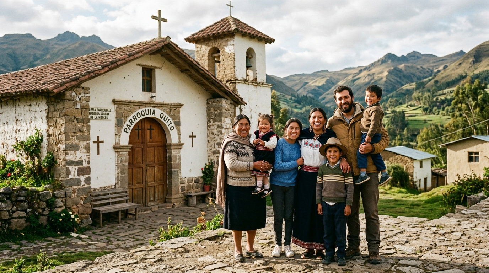
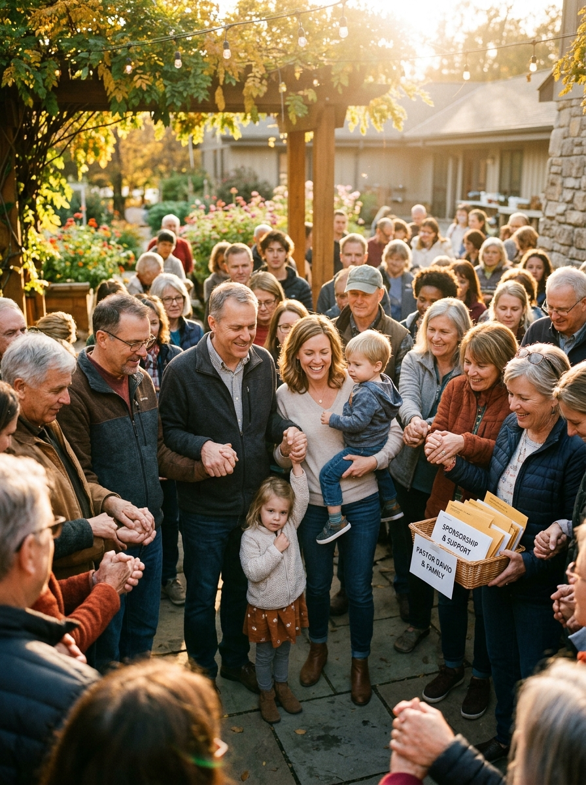
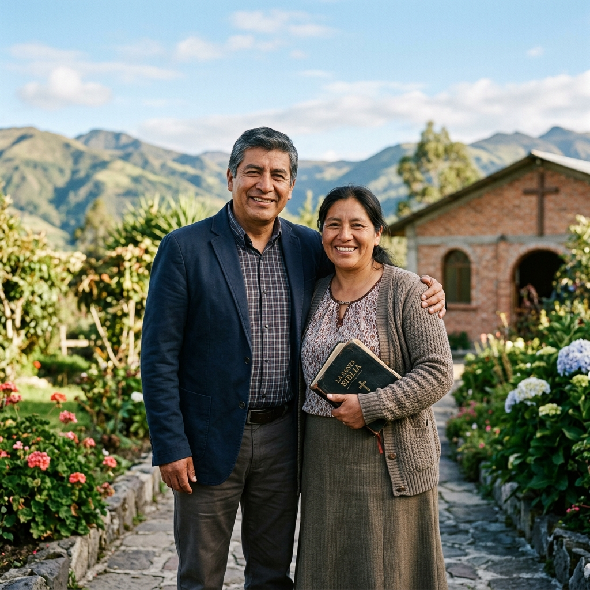
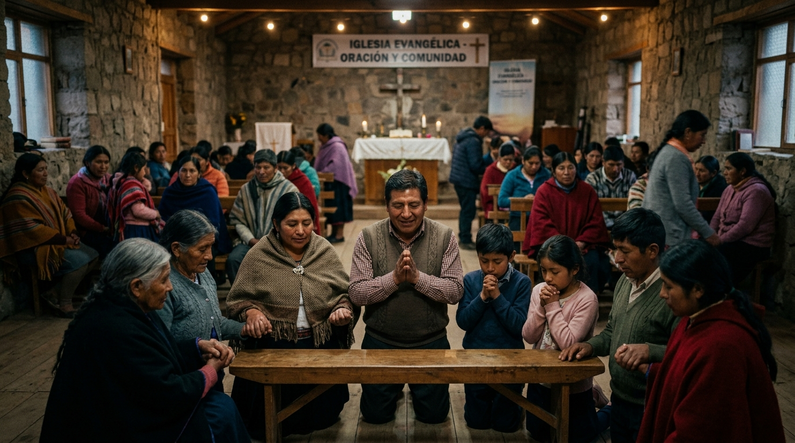

Restaurando la dignidad, Honrando el llamado, Inspirando esperanza
Hay llamados que se viven frente a muchos, pero cuyas cargas se llevan en silencio. En AXIOS Initiative creemos que quienes han dedicado su vida a cuidar, guiar y servir a otros también merecen ser cuidados.
Existimos para honrar, fortalecer y acompañar a pastores y sus familias, brindándoles cuidado integral, restauración, formación y apoyo para que puedan vivir su llamado con salud, fortaleza y dignidad.
What is AXIOS?
Derived from the original Greek language, AXIOS means:
Nuestras Iniciativas
Detrás de cada pastor hay una persona, una familia y una historia que también necesitan ser cuidadas.
Salud Mental, Emocional
y Espiritual
Fomentando el bienestar emocional, la fortaleza matrimonial y la restauración personal.
- Retiros pastorales, conferencias y redes de apoyo.
- Consejería confidencial y atención a la salud mental.
- Plataforma digital y app móvil de salud integral.
- Espacios seguros de descanso y renovación pastoral.
Formación Teológica
y Liderazgo
Equipando a los líderes con educación bíblica, tutoría y herramientas ministeriales.
- Formación bíblica y teológica avanzada continua.
- Desarrollo de habilidades y recursos ministeriales.
- Acompañamiento personalizado y cohortes de estudio.
- Recursos y herramientas para afilar el llamado.
Pastor Family Adoption Initiative
Conectando corazones y recursos para sostener a quienes han dedicado su vida a servir.
- Proveer apoyo financiero periódico que ayude a la familia pastoral.
- Crear una relación genuina entre el patrocinador y el pastor.
- Invertir en la salud espiritual, emocional, matrimonial y familiar.
- Dar al pastor oportunidades para continuar desarrollando su llamado.
La Realidad Pastoral en América Latina
Hallazgos clave de nuestra investigación regional a líderes, familias y pastores bautistas.
Salud Mental & Emocional
Formación & Liderazgo
Sostén Financiero & Patrocinio
"Esta información representa el resultado de una investigación y encuesta de 14 meses realizada en 19 países y 21 Convenciones Bautistas de América Latina."
Los cuatro pilares de AXIOS
La columna vertebral de nuestra organización es honrar,
fortalecer y acompañar a las familias pastorales.
CUIDAR
Cuidado integral para el bienestar emocional, espiritual y relacional del pastor y su familia.
RESTAURAR
Espacios seguros de descanso, acompañamiento, renovación y restauración.
EQUIPAR
Formación teológica y desarrollo de liderazgo para fortalecer el llamado ministerial.
SOSTENER
Conectar iglesias, personas y recursos para apoyar de manera práctica a familias pastorales.
Próximos Proyectos
Espacios de encuentro, retiros pastorales y conferencias
diseñados para renovar, equipar y honrar a las familias ministeriales.

Retiro de Renovación "AXIOS Restaura"
Un espacio de 4 días de descanso integral, atención emocional privada y renovación espiritual para pastores y sus cónyuges.
Cumbre de Capacitación Ministerial
Talleres intensivos en hermenéutica aplicada, salud mental en el liderazgo y herramientas digitales para iglesias locales.

Encuentro "Hogares Dignos & Fuertes"
Conferencia orientada a fortalecer la salud matrimonial pastoral, actividades recreativas para hijos de pastores y finanzas saludables.
Our goal for 2026/2027 is to raise $200,000
Tu generosidad puede fortalecer a una familia pastoral. Únete a nosotros y ayuda a cuidar a quienes han dedicado su vida a servir a las iglesias en America Latina.
About AXIOS INITIATIVE
AXIOS no comenzó con una organización. Comenzó con una carga en el corazón.
Cuidando el corazón detrás del llamado
Organizada exclusivamente como una entidad cristiana sin fines de lucro bajo la Sección 501(c)(3) del IRS, AXIOS INITIATIVE existe para respaldar la dignidad, la resiliencia emocional y la estabilidad financiera de los pastores bautistas y sus familias vinculados a sus Convenciones Bautistas en América Latina.
Nuestra Historia
Durante casi 30 años de ministerio pastoral, he tenido el privilegio de conocer la vida del pastor desde diferentes perspectivas. Soy pastor, pero también soy hijo, sobrino, yerno y primo de pastores. El ministerio pastoral no ha sido simplemente parte de mi profesión o de mi llamado; ha sido parte de mi historia, de mi familia y de mi vida...
Nuestro Equipo
Líderes, pastores y siervos dedicados a acompañar,
equipar y honrar a las familias pastorales en América Latina.
Pr. Lielson Penido
La historia de Lielson Penido ha estado profundamente marcada por la gracia de Dios, la familia y el ministerio. Adoptado desde pequeño y nacido en el contexto de una familia pastoral, creció en Brasil hasta los 12 años y después se mudó con sus padres a Ecuador como misioneros de la Convención Bautista de Brasil...
“Porque quienes sirven… son dignos.”
Pr. Francisco Juarbe, ThD
Pastor, mentor y educador cristiano con amplia experiencia en cuidado pastoral, plantación de iglesias y formación de líderes. Sirve en Axios Initiative acompañando y fortaleciendo a pastores...
Pr. Mario Figueroa
Mario ha estado sirviendo como pastor en Tampa desde 2020. En 2023, con un fuerte sentido de llamado a establecer una iglesia multicultural para mantener la unidad generacional...
Pr. David Endara
Pastor y miembro de la Junta Directiva de Axios Initiative, supervisando la gestión y transparencia financiera de la organización.
Governance & Fiduciary Integrity
Dirigida por una Junta Directiva dedicada que opera bajo estrictas políticas de conflicto de intereses, transparencia financiera y la prohibición absoluta de beneficio privado. Sus miembros ejercen su función impulsados por una pasión compartida por la atención pastoral.
INITIATIVES
Empowering, restoring, and equipping pastoral families through core strategic initiatives.
Refreshing spiritual retreats, confidential mental health resources, and peer support networks designed to restore pastors and spouses.
Advanced biblical education, leadership development, mentorship, and practical training programs to equip ministry leaders.

Holistic financial assistance, emergency relief, sabbatical grants, and long-term sponsorship for pastoral families facing hardship.
MENTAL, EMOTIONAL AND SPIRITUAL HEALTH
Atención integral, consejería confidencial y programas especializados
diseñados para restaurar y sostener a las familias pastorales.
THEOLOGICAL & LEADERSHIP FORMATION INITIATIVES
Equipando a pastores y líderes para proclamar fielmente la Palabra de Dios,
pastorear con excelencia y dirigir iglesias saludables.
Pastor Family Adoption Initiative
Honrando el llamado. Fortaleciendo la Familia y sostenciendo la Misión
A través de la Iniciativa de Adopción de Familias Pastorales de Axios, personas e iglesias pueden brindar un apoyo financiero mensual a familias pastorales calificadas. Cada pastor participante pasa por el proceso de verificación pastoral, denominacional, ministerial, de carácter y financiero de Axios. Axios determina el monto de patrocinio adecuado en función de la necesidad financiera verificada de la familia y el costo de vida local.
Usted brinda la alianza. Axios brinda la verificación y la rendición de cuentas.
Juntos, fortalecemos a pastores fieles y a sus familias.
Nuestro proceso y compromiso
LATIN AMERICA REGIONAL PROJECTS
Empowering pastoral families and supporting local Baptist convention initiatives across 20 Latin American nations.
 Healthy Family Initiative
Healthy Family Initiative
Pastoral Restoration & Care Project — Quito & Sierra Central
Restoring dignity and providing holistic support to pastoral families in Quito and the Sierra Central region.

Ecuador • South America
AXIOS PROJECTS IN ECUADOR
Select a local project below to explore its mission, pastoral needs, documentary showcase, and support its fundraising goal.
Iglesia Bautista Familias Saludables
Providing comprehensive emotional, spiritual, and financial support for pastoral families in South Quito.
Seminario Bíblico ABEL
Advanced biblical education, pastoral leadership cohorts, and ministry resources for emerging leaders in Ecuador.
PONS (Programa Operación Niños Saludables)
Nutritional support, health checkups, and educational sponsorship for children of pastoral families in Sierra Central.
Ecuador • Healthy Family Initiative
Iglesia Bautista Familias Saludables
Restoring dignity and providing holistic support to pastoral families in Quito and the Sierra Central region.
Pastoral Restoration & Care Project — Quito & Sierra Central
Documentary Showcase: Pastoral Resilience in Ecuador

Watch how AXIOS Initiative partners with local churches in Ecuador to restore dignity, provide counseling, and sustain pastoral families.
- Free psychological & spiritual counseling sessions for pastoral burn-out
- Subsidized medical checkups and emergency healthcare assistance
- Pastoral marriage retreat sponsorship & children educational aid
- Financial hardship relief during local economic instability
Founded in 2004 in South Quito, Grace & Life Baptist Church has faithfully served over 140 local families. Despite economic hardship and heavy ministry demands, Pastor Carlos and Martha have led community dining, youth discipleship, and regional pastor prayer networks. AXIOS Initiative provides critical sponsorship to ensure their health, dignity, and continued call.
Get in touch with us
Whether you need pastoral support or want to partner with our mission, we are here for you.
100% Confidential Pastoral Care
We honor your privacy. Every message from a pastor or ministry family is handled with strict discretion and confidentiality.
Solicitar Ayuda